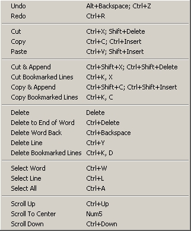

| Edit Menu | Previous Top Next |
|  |
Undo : cancel last things
done.
Redo : do last things previously
undone.
Cut : cut selection and put it in the clipboard.
Copy : copy selection and put it in the
clipboard.
Paste : insert clipboard content in current document.
Cut & append : cut selection and append it to clipboard's content.
Cut BookMarked Lines : cut bookmarked lines and put they in the clipboard.
Copy & Append : copy selection and append it to clipboard's content.
Copy Bookmarked
Lines : copy bookmarked lines and put they in the clipboard.
Delete : delete
selection.
Delete to End of Word : delete from current position to end of word.
Delete Word Back : delete from current position to beginning of word.
Delete Line : delete current line.
Delete Bookmarked Lines : delete bookmarked lines.
Select Word : select word at current position.
Select Line : select line at current position.
Select All : select the entire document.
Scroll Up : scroll content view up.
Scroll To Center : put cursor in the middle of current view.
Scroll Down : scroll content view down.
|